Magento 2 Newsletter Popup & Exit Intent.
This extension is also included in the Pearl Theme.
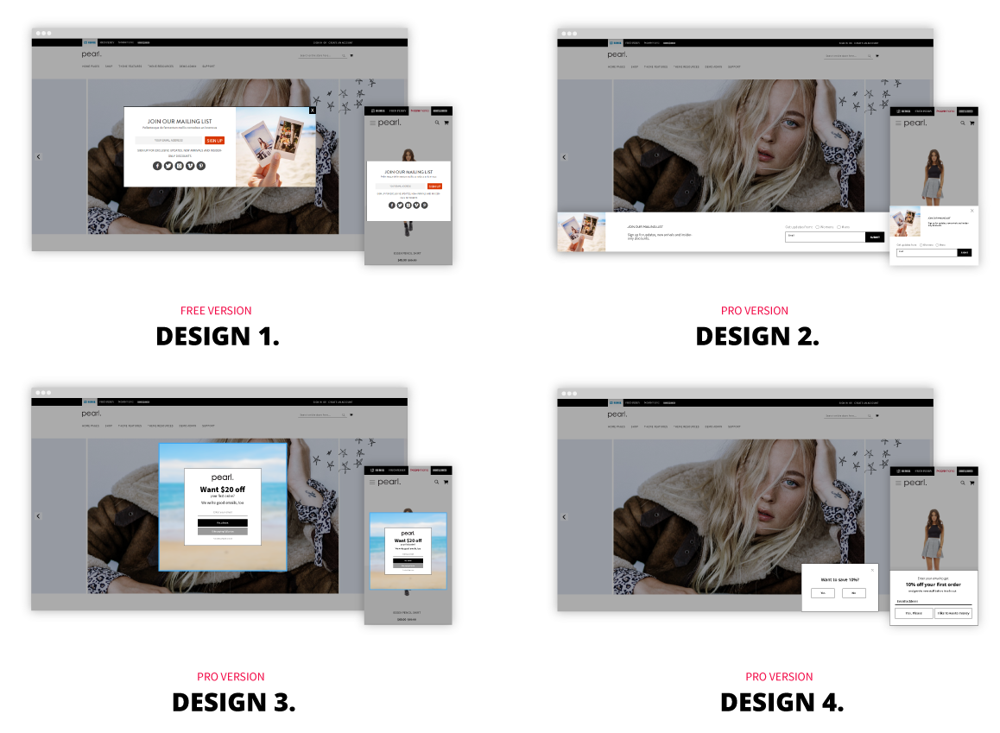
HOW TO INSTALL
This extension is available in two versions: FREE/OPEN-SOURCE and PRO.
FREE/OPEN-SOURCE Version
The FREE version is open-source and available on GitHub:
https://github.com/Weltpixel/magento2-weltpixel-newsletter-lite
Please refer to the README file in the GitHub repository for installation instructions.
PRO Version Installation (Composer)
The PRO version is installed via Composer, which is the official and only supported installation method.
Step 1: Prerequisites
- Ensure your Magento version is compatible (2.3.0 - 2.4.8 and all Security Patches)
- Install on a testing/development environment first
- Set Magento to developer mode before installation
- Make sure you have Composer installed on your server
php bin/magento deploy:mode:set developer
Step 2: Access Composer Configuration
Head into the Downloadable Products section of your weltpixel.com account. This is where you'll be able to see your Composer Configuration Commands.
You'll need to have Composer installation enabled for your account. If you don't see the Composer Configuration Commands, please contact our support team.
Step 3: Configure Repository
Run the generated commands from your account. Example commands:
composer config repositories.weltpixel composer https://weltpixel.repo.packagist.com/your-id/
composer config --global --auth http-basic.weltpixel.repo.packagist.com token your-token
These commands will provide you access to the WeltPixel repository. Replace 'your-id' and 'your-token' with the actual values from your account.
Step 4: Install via Composer
Run the following command in your Magento root directory:
composer require weltpixel/m2-weltpixel-newsletter
Step 5: Enable and Setup
Run the following commands:
php bin/magento setup:upgrade php bin/magento setup:di:compile php bin/magento setup:static-content:deploy -f
Step 6: Cache Management
Flush any caches:
php bin/magento cache:flush
Step 7: Production Mode
If your store was in production mode, switch it back:
php bin/magento deploy:mode:set production
Wooohooo! The extension is now installed on your Magento store! Congrats!
How to Upgrade the PRO Extension
- Step 1: Run: composer update (for the package)
- Step 2: Run setup commands as shown above
- Step 3: Flush cache
CONFIGURATION.
ENABLE NEWSLETTER POPUP.
- Enable Newsletter [All Pages / Just Home Page] - enable newsletter module
- Display Mode [Yes / No] - If this option is set to 'Just Home Page - the popup will show up only on homepage after meeting the vizibility conditions setup in the options below. If this option is set to ‘All pages’ - the popup will shop up on any page type once the vizibility conditions are met.
- Display on mobile [Yes / No] - If this option is set to No, newsletter will only show up on desktop devices.
Go to Admin > Store > Configuration > WeltPixel > Newsletter
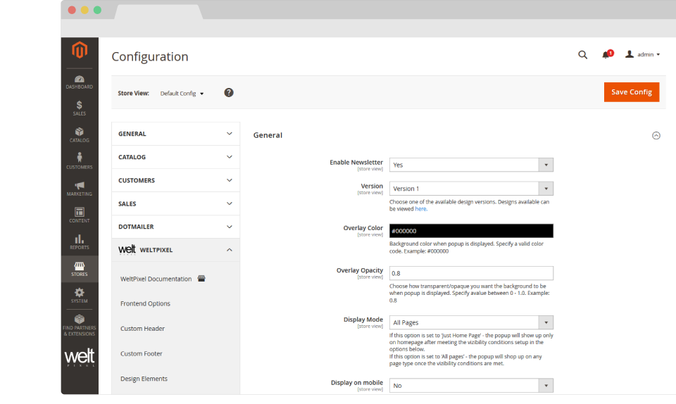
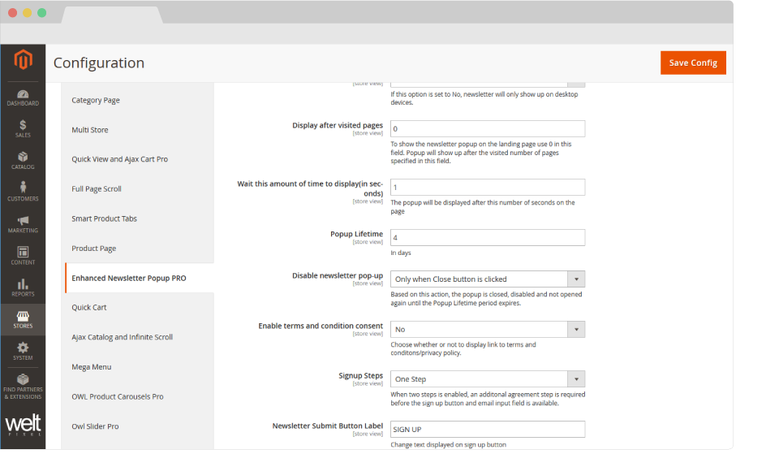
CONFIGURE POPUP BEHAVIOUR.
- Display after visited pages [number of pages] - To show the newsletter popup on the landing page use 0 in this field. Popup will show up after the visited number of pages specified in this field.
- Wait this seconds to display [number of seconds] - The popup will be displayed after this number of seconds on the page.
- Displayed Static Block - select the weltpixel_newsletter static block. You can edit this block to make design adjustments, add social media links, GDPR link, etc.
- Popup Lifetime [number of days] - Lifetime of the popup. Select the number of days to pass after the the popup is disabled, before the popup will show up again for the same user.
- Disable newsletter pop-up - Based on this action, the popup is closed, disabled and not opened again until the Popup Lifetime period expires.
Go to Admin > Store > Configuration > WeltPixel > Newsletter
SETUP GDPR COMPLIANCE.
- Enable terms and condition consent [Yes / No] - If you enable this option, the terms and conditions added in the option below will show up in Newsletter Popup.
-
Terms and Condition text/link - Here is an example of link pointing to your own terms and conditions.
<a href=“https://pearl.weltpixel.com/privacy-policy-cookie-restriction-mode” target=“_blank”>I agree to the Privacy Policy. </a>
- Terms and Condition checkbox mandatory [Yes / No] - You can make the terms and conditions mandatory before user is able to signup to newsletter.
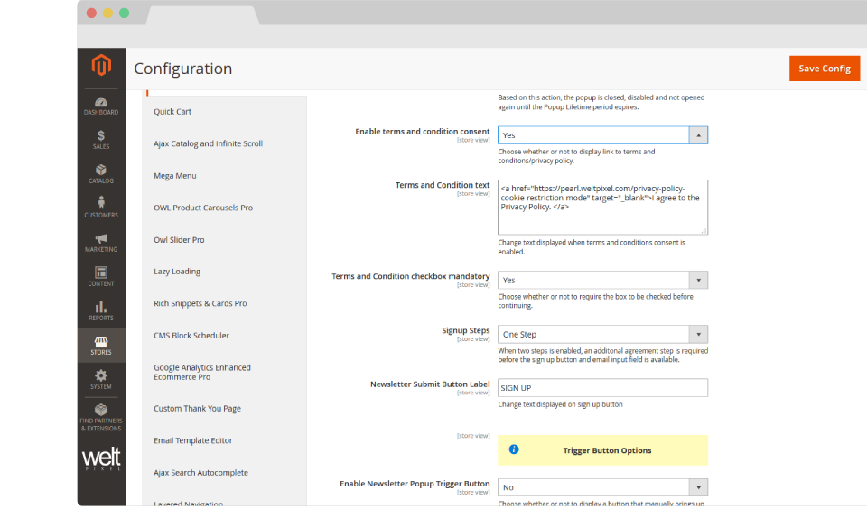
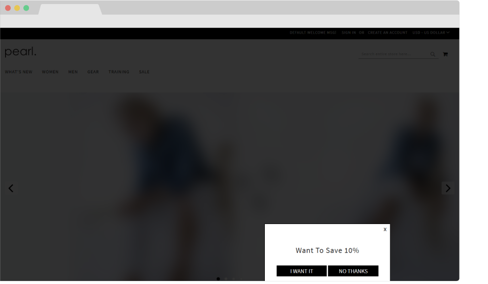
How to configure the multistep experience.
-
The first step is often used to enhance the customer’s need for a discount or offer without asking anything at this point in return.
This step has a very simple and direct message. The design can be kept simple and clean.
-
The second step focuses on gathering the data that you need. This step will contain the newsletter subscription form along with GDPR compliance message.
The multistep experience is essential when testing conversion rate optimization.
- To enable the multistep experience, simply select the Two Steps option under Signup Steps.
- You will now have options to configure the label for each button or if you would like it enabled or disabled.
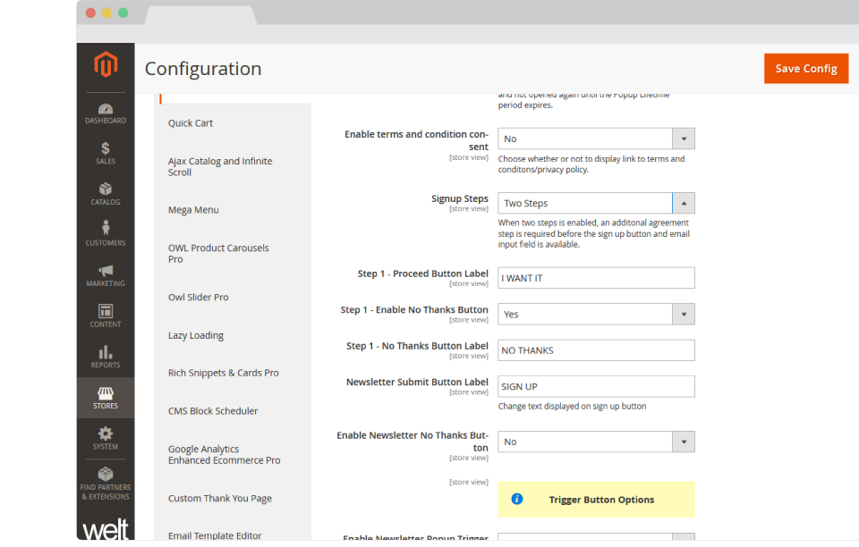
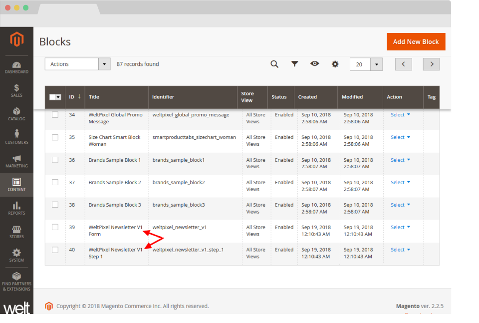
- WeltPixel Newsletter V2 Step 1 -> will represent the first step without a newsletter subscribe form.
- WeltPixel Newsletter V2 Form -> will represent the step that contains the newsletter subscribe form, also in a single step experience this will be the block that you would like to customize.
The content is easily customizable, for each step, simply go to: Content -> Blocks and search for Newsletter
Depending on your design you will have two blocks for each step. For example:
In this example, we've used design Version 2. If you're using a different design Version, make sure you search for the block that corresponds to it.
How to enable the exit intent popup
To enable the exit intent popup, simply go to:
Newsletter Settings -> Exit Intent -> Enable Exit Intent -> Yes
The customization options are very similar to the newsletter popup. Select which design option you would like, behaviour, design and styling as well as user experience.
You can select if you would like the user's experience to be single or multistep. The content can be fully customized for every design in the Content -> Block section by simply searching for the weltpixel_exitintent_newsletter identifier.
Same as for the newsletter popup, you will have two blocks for each design; here, you can fully customize the content of your blocks.
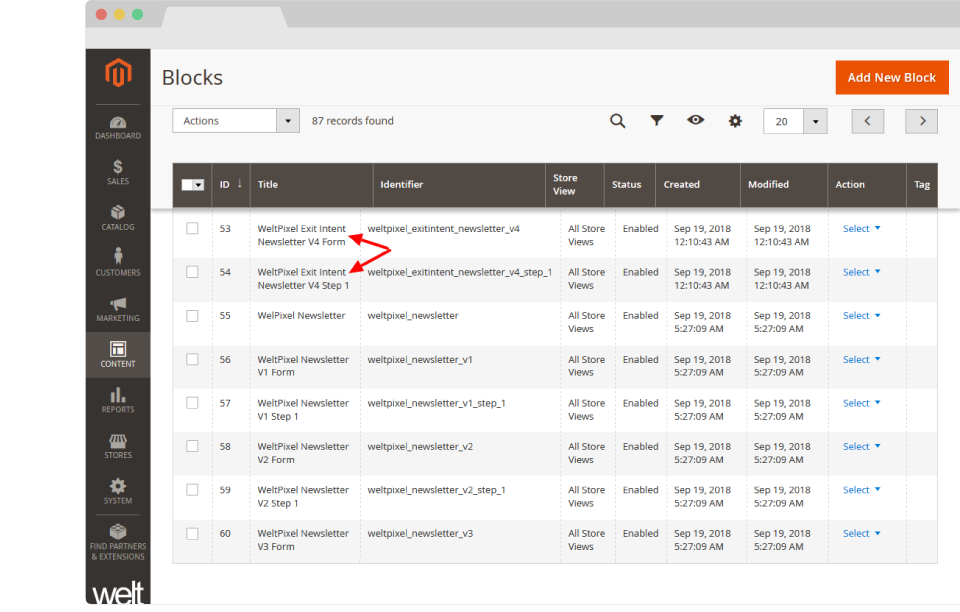
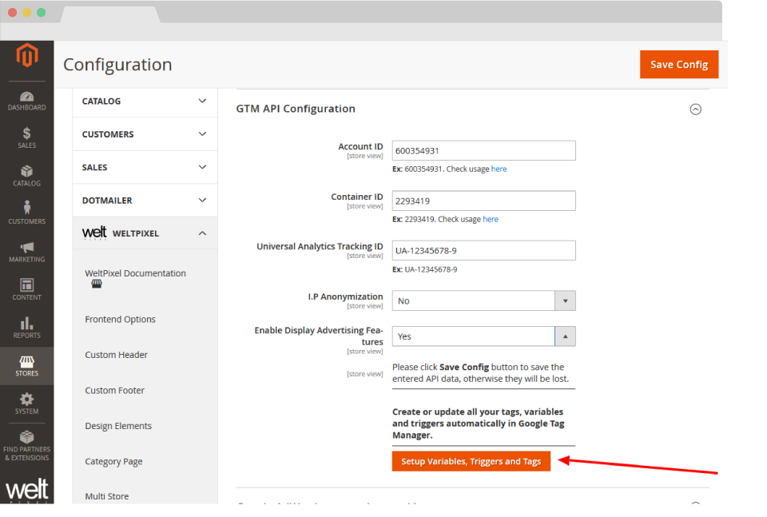
How to enable Google Tag Manager Tracking.
- Simply go to WeltPixel -> Newsletter Settings -> Enable Google Tag Manager Tracking -> Yes
-
Then head to WeltPixel -> Google Analytics Enhanced Ecommerce Pro -> Sign in to Google -> click Setup Variables, Triggers, and Tags.
Analyzing your data is a must in optimizing the conversion rate of your newsletter popup or exit intent. The amount of subscribers that you can have can vary even more then 100% based on the timing, design and CTA that you have.
This feature will allow you to track event impressions and event successful signups.
To enable GTM tracking, installation and setup of Google Analytics Enhanced Ecommerce PRO Extension is required prior to this configuration. You'll need to use the PRO version of the extension as the free version of Enhanced Ecommerce GTM does not include this functionality.
This action will create the all the tags and triggers necessary.
Now go to your Google Tag Manager dashboard, and under Tags and Triggers you will find all the tags and triggers newly created.
Now that all your tags are created, click on the Publish button in the top right hand side corner.
After a few days of data collection, you will be able to see a detailed report in Google Analytics by going to Behavior -> Top Events -> search for Newsletter Popup or Exit Intent.
For more information on Enhanced Ecommerce GTM configuration, please follow the instructions on the GTM user guide, in order to set up your Google Tag Manager and Google Analytics Account.
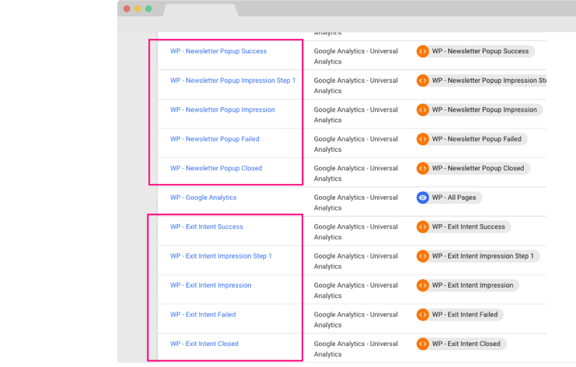
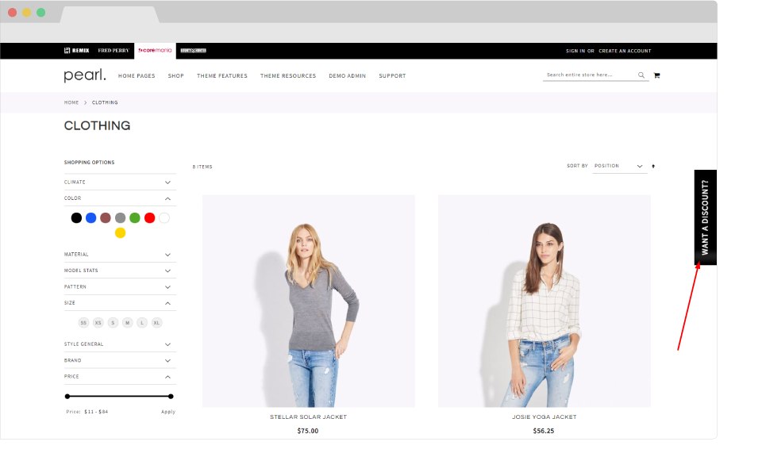
How to enable newsletter trigger button.
The Trigger Button will allow your customers to initiate the popup box based on their needs, without disturbing their experience. To enable this behavior go to:
WeltPixel -> Newsletter Settings -> General -> Enable Newsletter Popup Trigger Button -> select Yes.
Below you will find all the options to customize the text of the button, the color of the text as well as the background. You can also choose whether to hide it on mobile devices.
On the frontend of your website, you will find a button on the right hand side, which when clicked opens the newsletter popup with the design and configuration already selected.
How to configure the Social Media Login. (Social Login PRO extension required)
- [Email Only] - Display only the Email sign up method. The Social Media functionality is disabled.
- [Social Login Only] - Display only the Social Media accounts sign up/log in method.
- [Email + Social Login] - Display both email address and Social Media account sign up/log in methods.
The Social Media Login functionality feature allows your customers to use their Social Media accounts to Sign Up or Log In directly from the Newsletter Popup, ensuring a smooth registration process. To enable this feature, head to:
WeltPixel -> Newsletter Settings -> Social Media Login -> Social Login Integration - Select either [Social Login Only] or [Email + Social Login].
Social Login Integration Applies To - Choose to display the Social Media Login feature on the Newsletter Popup, the Exit Intent or Both.
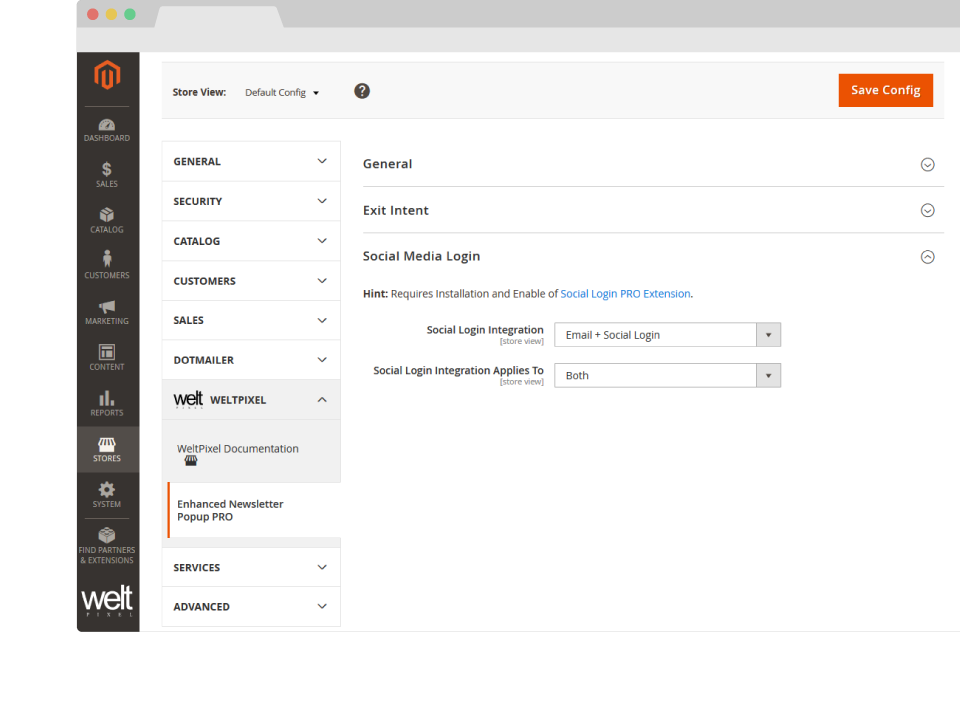

Change Log.
What's new in v.1.16.0 - January 7, 2026
- Giving back: As a celebration of over 10 years of activity within the Magento 2 ecosystem, and as a way to give back to the community, a number of WeltPixel extensions (both FREE and paid) have officially gone fully Open Source via public Github repositories. Find the full list on Github.
- New Feature: Introduced composer as the official and singular installation method for all WeltPixel products. Previously, this was only available for the PRO version of the Google Analytics 4 extension, as well as the Marketing Suite Pro.
- The FREE version of this extension has moved to a fully Open Source model and is available publicly on Github. See the link in the Change Log entry above to find it.
What’s new in v.1.15.9 - October 28, 2025
- Magento Compatibility: Introduced compatibility with the latest released Magento 2 Security Patches - Magento 2.4.8-p3, Magento 2.4.7-p8, Magento 2.4.6-p13, Magento 2.4.5-p15 & Magento 2.4.4-p16.
- New Feature: Added improvements to Magento Admin messaging around Product Updates to ensure visual clarity for users not running the latest product release.
- New Feature: Added .ddev.site and .cloudwaysapps.com as accepted development domains. These domains will no longer require additional license keys.
What’s new in v.1.15.7 - September 2, 2025
- Magento Compatibility: Introduced compatibility with the latest released Magento 2 Security Patches - Magento 2.4.8-p2, Magento 2.4.7-p7, Magento 2.4.6-p12, Magento 2.4.5-p14 & Magento 2.4.4-p15.
- Added additional validations to prevent Magento Admin errors when the Backend extension could not fetch the current server user due to permissions issues.
- Added adjustments to frontend templates to adhere to Magento Best Practices regarding XSS validations.
- Fixed a CSP issue that would sometimes prevent orders from being created via the Magento Admin.
What’s new in v.1.15.3 - June 20, 2025
- Magento Compatibility: Introduced compatibility with the latest Magento 2.4.8-p1, 2.4.7-p6, 2.4.6-p11 & 2.4.5-p13 Security Patches releases. Upgrade ASAP to keep your store secure.
- Fixed the Backend functionality that enables users to change the default Magento CSP Restriction Mode via the Magento Admin. This was broken starting with Magento 2.4.7.
What’s new in v.1.15.0 - April 22, 2025
- Magento Compatibility: Introduced compatibility with the new Magento 2.4.8 release, as well as the accompanying 2.4.7-p5, 2.4.6-p10, 2.4.5-p12 and 2.4.4-p13 Security Patches.
- PHP Compatibility: Introduced compatibilty with PHP 8.4, which is now officially compatible with the latest Magento 2.4.8 version.
- New Feature: Added magento2.docker as a valid domain for development purposes.
- New Feature: Added ddev.site as a valid domain for development purposes.
- Fixed an issue that would prevent certain extension options from correctly applying in Single Store Mode instances.
- Added backend licensing adjustments for compatibility with the Google Analytics & Social Marketing Suite PRO.
What’s new in v.1.14.13 - February 17, 2025
- Magento Compatibility: Introduced compatibility with the newly released Magento 2.4.7-p4, 2.4.6-p9, 2.4.5-p11 and 2.4.4-p12 versions.
- Fixed an issue related to licensing which would prevent license keys from being validated various subdomains.
What’s new in v.1.14.11 - January 15, 2025
- Removed deprecated Magento 2.2.x code version from extension package.
What’s new in v.1.14.9 - November 26, 2024
- Added minor Magento Admin adjustments to the module status section for increased clarity and compatibility with server-side Social Pixel addons.
What’s new in v.1.14.7 - October 11, 2024
- Compatibility: Introduced compatibility with the latest Magento 2.4.7-p3, 2.4.6-p8, 2.4.5-p10 and 2.4.4-p11 versions, which come with critical security adjustments for the platform. Magento 2 merchants are urged to upgrade to the latest patches ASAP.
- New feature: Added a new Magento Admin configuration option to allow for hiding the Newsletter Trigger Button on mobile devices for better user experience.
- Added various code updates for increased security around the licensing functionality as well as the Help Center and WeltPixel Developer Magento Admin sections.
What’s new in v.1.14.5 - August 23, 2024
- Compatibility: Introduced compatibility with the latest Magento 2.4.7-p2, 2.4.6-p7, 2.4.5-p9 and 2.4.4-p10 versions, which come with critical security adjustments for the platform. Magento 2 merchants are urged to upgrade to the latest patches ASAP.
What’s new in v.1.14.3 - June 20, 2024
- Compatibility: Introduced compatibility with the latest Magento 2.4.7-p1, 2.4.6-p6, 2.4.5-p8, 2.4.4-p9 versions, which come with critical security adjustments for the platform. Magento 2 merchants are urged to upgrade to the latest patches ASAP.
- New Feature: Added a new section in the Magento Admin that checks to make sure the latest product version is installed and notifies in case an update is available, as well as a button that allows for new features to be requested.
- Added minor configuration option description changes to reflect shift from the deprecated Google Tag Manager extension to the Google Analytics 4 integration.
What’s new in v.1.14.1 - April 19, 2024
- Confirmed compatibility with the latest Magento 2.4.7 release, as well as newly released 2.4.6-p5, 2.4.5-p7 & 2.4.4-p8 Security Patches.
- Confirmed compatibility with PHP 8.3 on the Magento 2.4.7 release. PHP 8.2 is also supported for this Magento version.
- Added security improvements to the Backend module's license verification process.
What’s new in v.1.11.21 - January 9, 2024
- New Feature: Updated Social Icons and Logos used in the Newsletter Popup extension to reflect the new Twitter/X Branding changes.
- Added small adjustments to the JS Parser used alongside the Speed Optimization extension for performance improvements.
- Added minor adjustments for increased compatibility with Varnish Caching in conjunction with the Google Analytics 4 extension.
- Fixed an error that would be thrown in the WeltPixel -> Extensions Version admin section when a module's composer.json file was missing the version node.
What’s new in v.1.11.19 - October 19, 2023
- Optimized the license verification process for increased Magento Admin performance, as well as to account for licensing server downtimes.
- Fixed an issue that would sometimes result in an error being thrown when using older PHP versions, such as PHP 7.4.
- Confirmed compatibility with the newly released Magento 2.4.6-p3, 2.4.5-p5, and 2.4.4-p6 Security Patches.
What’s new in v.1.11.17 - June 28, 2023
- Confirmed compatibility with the latest Magento Security Patch releases 2.4.6-p1, 2.4.5-p3 and 2.4.4-p4.
- Fixed an error related to PHP 8.2 that would show when accessing the WeltPixel Debugger.
- Added .localdev as a universally accepted licensing domain.
What’s new in v.1.11.15 - March 22, 2023
- Fixed an error that would sometimes be thrown in the WeltPixel Debugger, depending on various server permissions.
- Added compatibility with the latest Magento 2.4.6 and 2.4.5-p2 versions.
What’s new in v.1.11.11 - November 23, 2022
- Fixed a bug that would, in some cases, result in an error related to a Newsletter Javascript file when running a bundling command via our Speed Optimization extension.
- Confirmed compatibility with the latest Magento Security Patch releases 2.4.5-p1 and 2.4.4-p2.
What’s new in v.1.11.7 - September 1, 2022
- Fixed an issue that prevented the Newsletter from automatically appearing when it was configured to do so.
- Confirmed compatibility with the latest Magento 2.4.5 and 2.4.4-p1 versions.
- Updated installation/upgrade scripts to use data patches.
What’s new in v.1.11.1 - April 25, 2022
- Fixed an incorrect licensing message on B2B Magento Enterprise instances which would display when an invalid license was entered.
- Confirmed compatibility with the latest Magento 2.4.4 and 2.3.7-p3 versions as well as PHP 8.1.
What’s new in v.1.10.17 - October 22, 2021
- Confirmed compatibility with the latest Magento 2.4.3-p1 and 2.3.7-p2 versions.
What’s new in v.1.10.15 - August 31, 2021
- Confirmed compatibility with the newly released Magento 2.4.3, 2.4.2-p2 and 2.3.7-p1 versions.
- Added .localhost as an accepted domain termination for the licensing process.
What’s new in v.1.10.11 - July 7, 2021
- Added improvments to the WeltPixel Developer Magento Admin section. Latest Cron Jobs now lists the last 100 executed Cron Jobs.
What’s new in v.1.10.9 - May 18, 2021
- Confirmed compatibility with the newly released Magento 2.3.7 and 2.4.2-p1 versions.
What’s new in v.1.10.7 - February 12, 2021
- Excluded Magento 2.0.x - 2.2.x from new features and fixes starting with this release.
- Adjusted WeltPixel Developer section comments.
What’s new in v.1.10.5 - February 12, 2021
- Confirmed compatibility with the newly released Magento 2.4.2 version.
- Added additional backend versioning verifications.
- Backend module code optimizations.
What’s new in v.1.10.1 - October 22, 2020
- Confirmed compatibility with the newly released Magento 2.4.1 version.
What’s new in v.1.10.0 - August 10, 2020
- Confirmed compatibility with the newly released Magento 2.4.0 version.
What’s new in v.1.9.8 - July 6, 2020
- Whitelisted domain for Content Security Policies introduced in Magento 2.3.5.
What’s new in v.1.9.7 - May 7, 2020
- Confirmed compatibility with Magento 2.3.5.
- Implemented small Backend performance optimizations.
- Added nxcli.net (Nexcess temporary URL) as a valid domain in the licensing process.
- Added an option in the Developer section to allow for switching Magento's CSP between "report-only" and "restrict".
What’s new in v.1.9.6 - April 9, 2020
- Fixed a Backend issue on Magento Commerce whereby the Category Schedule functionality was not working properly.
What’s new in v.1.9.5 - March 10, 2020
- Fixed an incompatibility with Google reCaptcha in Magento 2.3.x
What’s new in v.1.9.4 - February 5, 2020
- Code enhancements for increased security. Changed User Group info collection method.
- Confirmed compatibility for Magento 2.3.4.
What’s new in v.1.9.2 - November 27, 2019
- Added Magento and PHP version in the WeltPixel Developer section.
What’s new in v.1.9.1 - October 16, 2019
- Confirmed compatibility with the latst Magento 2.3.3 version.
- Included the WeSupply Toolbox integration extension - Proactive Notifications Email & SMS, Returns & RMA, Store Locator, Delivery Date Estimate, Logistics Analytics, NPS & CSAT score. Get Free on-boarding and launch within 24 hours.
What’s new in v.1.9.0 - July 18, 2019
- Implemented font optimizations for increased performance.
- Confirmed compatibility with Magento 2.3.2.
- Added HTTPS endpoint for licensing process.
What’s new in v.1.8.5 - June 7, 2019
- Small performance improvements.
What’s new in v.1.8.4 - April 25, 2019
- CSS adjustments.
- Added PHP version in the WeltPixel Developer Section.
What’s new in v.1.8.3 - April 3rd, 2019
- Fixed an issue whereby the Newsletter Trigger Button would remain displayed when disabled from Admin.
- CSS adjustments.
- Confirmed compatibility for Magento 2.3.1.
What’s new in v.1.8.2 - January 24, 2019
- Newsletter & Social Login Pro integration - sign up for the newsetter by creating an account with social login.
- Removed duplicated exitIntentEnabled option fetching.
- The trigger button will display the popup on all pages. It was failing to fire on Product Pages if the popup was not set to show there.
- Helpcenter adjustment, removed Zendesk iframe and added a simple link to our Support Center in order to avoid any potential conflicts with other admin js added by 3rd party extensions.
- Fix for multiple rewritten ImageFactory classes, rewrite check validity, rewrite checks optimizations.
What’s new in v.1.8.0 - December 8, 2018
- Compatibility adjustments for Magento 2.1.16/2.2.7/2.3.0.
- PHP 7.2 compatibility added.
- As Magento 2.3 comes with major core changes, we have provided a different set of files in order to achieve the best performance on each version.
What’s new in v.1.7.5 - October 24, 2018
- Fixed EscapeHtmlAttr issue, compatibility with Magento 2.1.15.
- Added detailed error messages for invalid licenses for an easier identification of the cause.
- License improvements, adding *.magento.cloud as a valid test domain for Enterprise Cloud environments. Now both ‘magentosite.cloud’ and ‘magneto.cloud’ can be used for testing purpose with the production domain license.
What’s new in v.1.7.4 - September 25, 2018
- Added design version 2, 3, 4.
- Added option to detect exit intent and shop popup.
- Added integration with Google Tag Manager.
- Added multistep signup process.
- Aadded possibility to trigger the popup with a custom button.
- Admin menu styling to fit screen size 1366px.
- Fix for production mode with merged JS - missing color pallet display now fixed.
What’s new in v.1.7.3 - August 22, 2018
- Initial release.